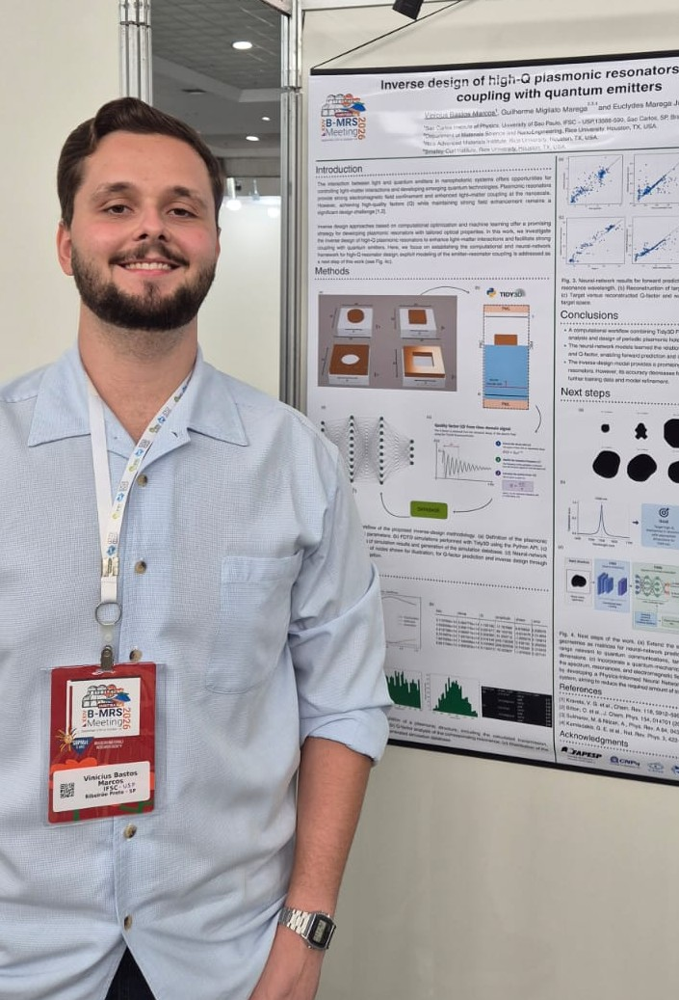

About
I am a PhD student in Experimental and Theoretical Physics at the São Carlos Institute of Physics (IFSC-USP), funded by FAPESP, working in the Nanoplasmonics Group (CePOF) under the supervision of Prof. Dr. Euclydes Marega Junior. I hold a B.Sc. in Computational Physics from IFSC-USP, where I used the Finite-Difference Time-Domain (FDTD) method to study the optical properties of plasmonic structures.
My research sits at the intersection of nanophotonics and scientific machine learning. I combine electromagnetic simulations with Deep Neural Networks (DNNs) and Physics-Informed Neural Networks (PINNs) for the modeling and inverse design of nanophotonic devices, with applications in strong coupling, polaritonic systems and two-dimensional (2D) materials.
Research & Funding
Nanoplasmonics Group · CePOF · IFSC-USP-
Nov 2025 – present
Inverse Design and Optimization of Nanophotonic Devices for Integrated Photonics and Quantum Technologies FAPESP
Direct Doctorate Scholarship · Process 2025/10637-3Integrating numerical modeling with DNNs and PINNs to inverse-design metasurfaces and nanostructures, exploring strong light–matter coupling, polariton formation and optical interactions in 2D materials.
-
Feb 2025 – Oct 2025
Machine Learning-Assisted Design of Plasmonic Metasurfaces CAPES
PROEX Master's Scholarship · Process 88887.116494/2025-00A framework coupling FDTD simulations with machine learning to accelerate the design of high-performance optical components for quantum communication, sensing and integrated photonics.
-
Sep 2023 – Dec 2024
Study of the Optical Properties of Plasmonic Structures Using Numerical Simulation FAPESP CNPq
Undergraduate Research · FAPESP 2023/05726-1 (preceded by CNPq-PIBIC 2023-2454)FDTD study of sub-wavelength metallic slit arrays: extraordinary optical transmission, reflectance resonances and evanescent field profiles at the metal–dielectric interface, aimed at coupling surface plasmon-polaritons with quantum emitters.
-
Sep 2022 – Aug 2023
Introduction to Plasmonics and FDTD Simulation CNPq
INCT Program Undergraduate Research · Process 117506/2022-2First steps in plasmonics, nanophotonics and electromagnetic simulation with the FDTD method.
Publications
Full list on Google Scholar →Tunable Periodicity in Metal Nanogratings for Optimized Plasmon-Enhanced Upconversion Luminescence in Er3+/Yb3+ Co-doped PGG Glasses
Conference Presentations
Inverse Design of High-Q Plasmonic Resonators for Strong Coupling with Quantum Emitters
Machine Learning-Optimized Plasmonic Metasurfaces for Tailored Light–Matter Interactions at the Nanoscale
Extraordinary Optical Transmission in Periodic Plasmonic Gratings: A Finite-Difference Time-Domain Approach
Study of the Optical Properties of Plasmonic Structures Using Numerical Simulation
Estudo das Propriedades Ópticas de Estruturas Plasmônicas Usando Simulação Numérica
Also attended: SIFSC 2026, Caipyra 2026, 32nd International Laser Physics Workshop (2024), SiRFoton (2024), IFGW Summer School (2024).
Education
-
Feb 2025 – present
PhD in Experimental and Theoretical Physics
IFSC, University of São Paulo · GPA 4.0/4.0Thesis: Inverse Design and Optimization of Nanophotonic Devices for Integrated Photonics and Quantum Technologies.
-
Mar 2021 – Dec 2024
B.Sc. in Computational Physics
IFSC, University of São Paulo · GPA 3.5/4.0Coursework in data science, high-performance programming, quantum information, numerical analysis and computational physics.
Additional courses
- Computational Methods Applied to Optics and Photonics — IFSC-USP (2026)
- Computational Infrastructure for AI & Containers: HPC Cluster Initiatives — ICMC-USP (2025)
- Machine Learning 2025 — DATA, ICMC-USP
- Four Methods to Numerically Solve the Time-Independent Schrödinger Equation — SBF
- An Introduction to Artificial Intelligence in Physics — SBF
Awards & teaching
- Gold Medal — National Science Olympics (2019)
- Merit Medal — Mathematical Kangaroo Brazil (2019)
- Teaching Assistant — Physics A for Environmental Engineering, EESC-USP (2022)
- Mentor — Academic Guidance I & II, Computational Physics (2024)
Skills
Outreach & Leadership
Science communication
- Guest speaker, Papo de Curso podcast on the Computational Physics program at USP (2026)
- Organizer & systems team, 15th São Carlos Physics Week — SIFSC XV (2026)
- Social media manager & designer, Nanoplasmonics Group IFSC-USP (2023 – present)
- Member, Optica Student Chapter (2024 – present)
Student representation
- Student representative, Undergraduate Studies Council (CoG-USP) — sole representative for all campuses outside the capital (2023 – 2024)
- Student representative, Library and Information Services, SBI-IFSC (2023 – 2024)
- Secretary, CEFiSC Physics Academic Center (2022 – 2024)
- Director, USP Central Student Union — DCE Livre (2022)
Get in touch
I'm happy to talk about nanophotonics, inverse design, scientific machine learning or possible collaborations.